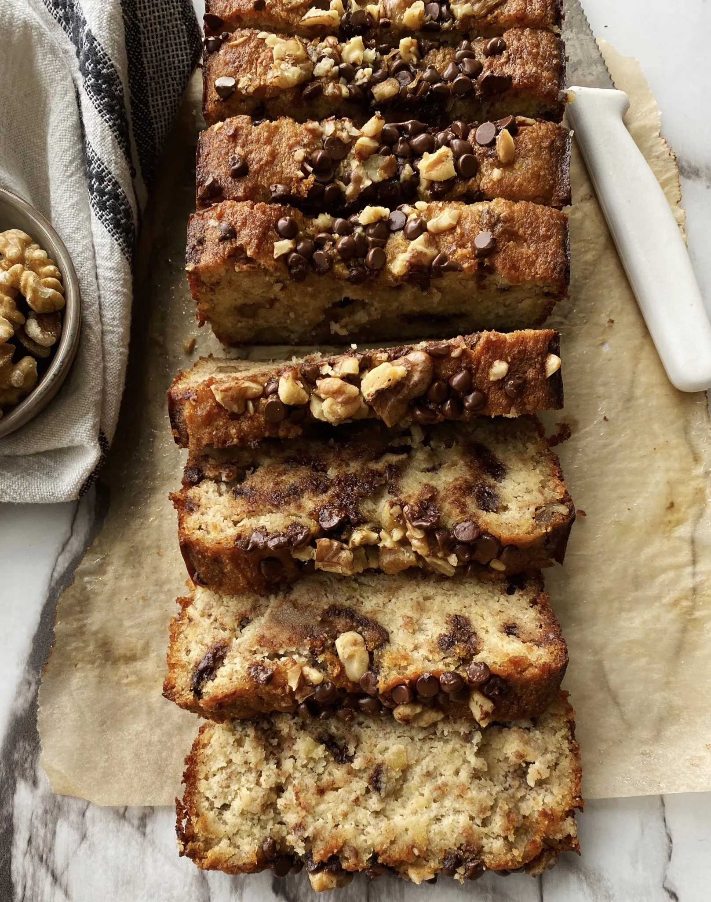
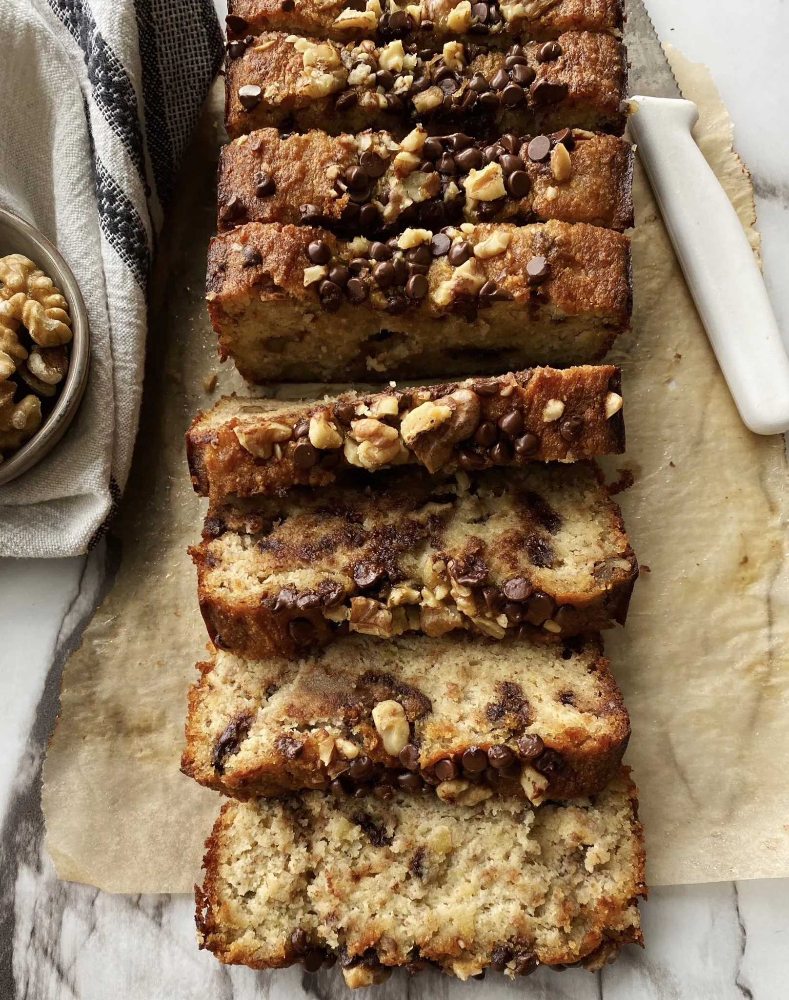
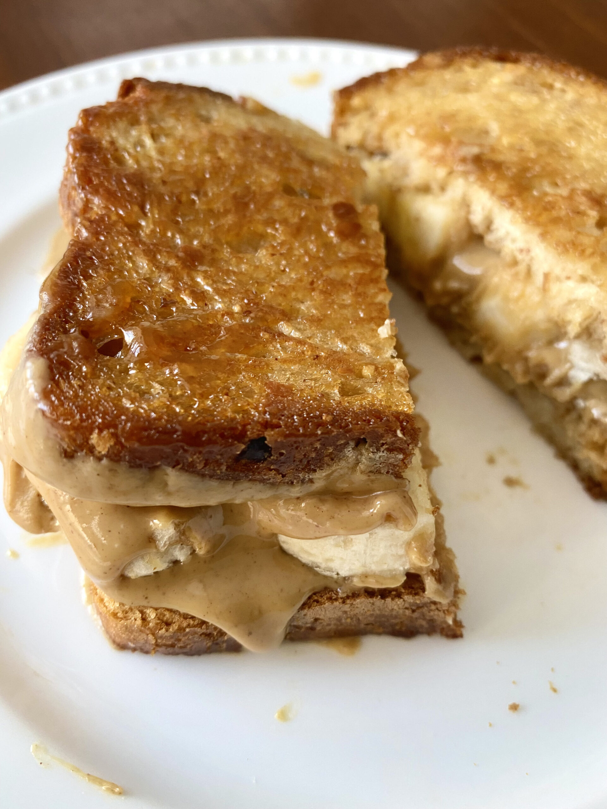
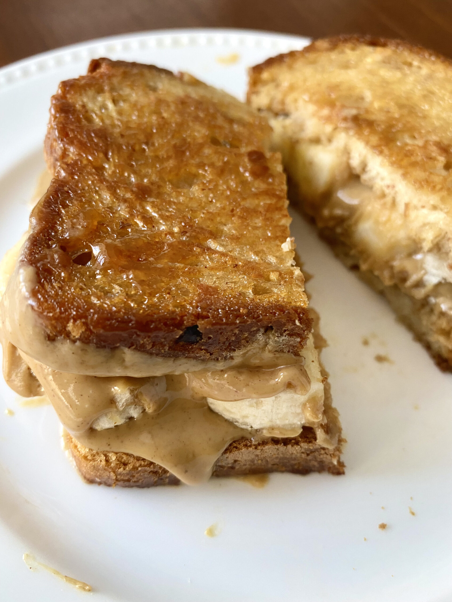

RECIPES
Double Chocolate Cookies
Origin: Michigan
Source: Family Recipe
Category: Dessert
My daughter learned to make these cookies at a baking camp at Zingermanns and has tweaked the recipe to fit the taste buds of her siblings. They are extremely sugary so the salt helps to balance it. Note, these cookies are best eaten very quickly.
Recipe Ingredients
- a. Unsalted butter
- b. Granulated sugar
- c. Packed light or dark brown sugar
- d. Large egg
- e. Pure vanilla extract
- f. Semi-sweet chocolate chunks (melted)
- g. All-purpose flour
- h. Natural unsweetened cocoa powder
- i. Baking soda
- j. Salt
- k. Semi-sweet chocolate chunks
Recipe Steps
- a. In a mixing bowl cream together the butter, granulated sugar, and brown sugar
- b. Add the egg and vanilla extract and beat well
- c. Add the melted chocolate
- d. In a separate bowl combine the flour, baking soda, cocoa powder and salt
- e. Combine the wet and dry ingredients
- f. Add the unmelted chocolate chunks
- g. Form 15 cookies and place on a baking sheet
- h. Cook for 12 to 13 minutes at 350 degrees
Additional Pictures


Chocolate Chip Banana Bread

Origin: American
Source: Chocolate Chip Banana Bread
Category: Lunch
This is a tried-and-tested recipe that I have used numerous times for making the perfect chocolate chip banana bread! Not only does it help utilize the bananas that have slowly overripened at the back of the fridge, it ends up creating an incredibly delicious, and relatively healthy, dessert.
Recipe Ingredients
- a. Cooking spray
- b. 2 cups (240 g) all-purpose flour
- c. 1 tsp. baking soda
- d. 1/2 tsp. kosher salt
- e. 1 large egg plus 1 egg yolk
- f. 1 cup (200 g) granulated sugar
- g. 1/2 cup (1 stick) unsalted butter, melted
- h. 1/4 cup sour cream
- i. 1 tsp. pure vanilla extract
- j. 3 ripe bananas, mashed
- k. 1/2 cup chopped toasted walnuts
- l. 1/2 cup semisweet chocolate chips
Recipe Steps
- a. Preheat the oven to 350º. Line a 9"-by-5" loaf pan with parchment and grease with cooking spray
- b. In a medium bowl, whisk flour, baking soda, and salt
- c. In a large bowl, mix egg, egg yolk, granulated sugar, butter, sour cream, and vanilla. Add bananas and stir until combined. Gradually add dry ingredients to banana mixture until just combined
- d. Fold in walnuts and chocolate chips and transfer to prepared pan
- e. Bake bread until a tester inserted into the center comes out clean, about 1 hour. Let cool 10 minutes in pan, then invert onto a wire rack and let cool completely
Additional Pictures

 

Grilled Peanut Butter and Banana Sandwich
Origin: American
Source: Grilled Peanut Butter and Banana Sandwich
Category: Dessert
This grilled peanut butter and banana sandwich is a sweet, warm breakfast idea. It's cooked like a grilled cheese sandwich but filled with melted peanut butter and warm bananas.
Recipe Ingredients
- a. Cooking spray
- b. 2 tablespoons peanut butter
- c. 2 slices whole wheat bread
- d. 1 medium banana, sliced
Recipe Steps
- a. Spread 1 tablespoon peanut butter onto one piece of bread and arrange banana slices over top. Spread remaining peanut butter onto second piece of bread, then invert and place over bananas; press firmly
- b. Spray a skillet with cooking spray and heat over medium heat. Place sandwich onto the hot skillet and cook until golden brown, 2 to 3 minutes per side
Additional Pictures
 
